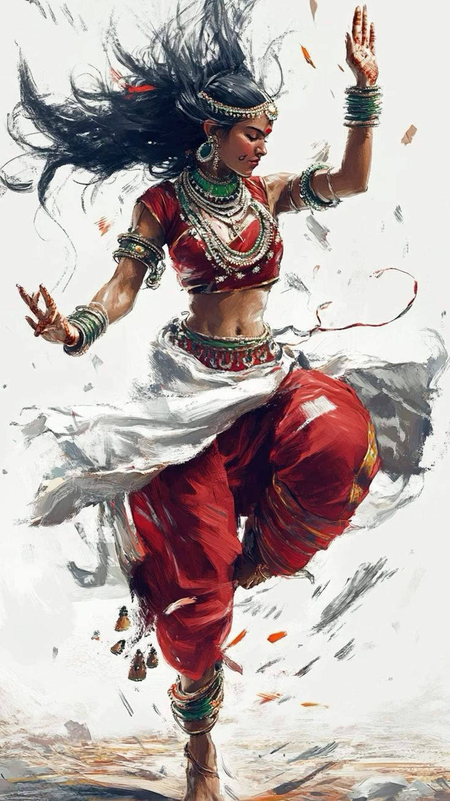

Anu
← Bahçe
Karakter
Bölümler
Anu Mukhtar · bölüm
Rüzgârın
defteri
Feranpolis'teki isyandan Pharm kuşatmasına kadar olanlar, Anu'nun kendi ağzından.
İçindekiler

Rüzgâr şimdilik hafif esiyor.
Anu'nun sayfasına dön
→